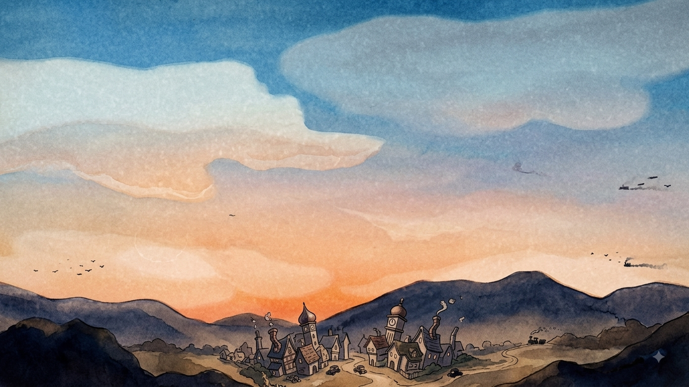

機体を実際に飛ばしています。通常飛行中も薄い白煙を引くので、どこをどう飛んだかが残ります。
被弾している P2（青）は、そこに濃い黒煙が重なります。
フィルム処理は「既定」＝弱と標準の中間で確定しています。
武装は下のボタンでも撃てます ―― 7.7mm と 20mm の弾道の違いをご確認ください。

図1 — 機体は画面幅の 8%。縦キズは不採用。ゲートウィーブの量は強度を変えても一定です。
弾道はゲームシステムをそのまま見た目に落としています。数値は仮で、プレイテストで詰めます。
7.7mm 機銃
まっすぐ・速い・遠くまで届く。連射でばらまいて削る武器。
- 弾速1500 px/秒（画面を約0.9秒で横断）
- 弾道直線。重力の影響なし
- 射程画面全域
- 連射毎秒約11発
- 威力小（撃墜まで複数発）
20mm 機関砲
遅い・近距離・山なり。当てにくいが当たれば一撃。
- 弾速640 px/秒
- 弾道重力で落ちる山なり
- 射程約 700px（画面の半分ほど）で消滅
- 連射単発・装填あり
- 威力一撃撃墜
発射炎（マズルフラッシュ）
撃った瞬間、機首から炎が出ます。どちらが撃っているかが一目でわかるように、20mm は大きく長い炎＋発射煙にしてあります。
- 7.7mm小さく速い閃光（0.085秒）
- 20mm大きな橙の炎（0.17秒）＋白い発射煙
- フィルム処理 — 既定は「弱と標準の中間」。縦キズは不採用
- ゲートウィーブ — 現在の量で確定。強度を上げても揺れは増えない
- 機体サイズ — 画面幅の 8%
- 煙 — 通常飛行は薄い白煙の軌跡、被弾は濃い黒煙
- 武装 — 7.7mm は直線・高速・長射程・連射、20mm は低速・短射程・山なり。発射炎あり
- HUD — クリーム地＋黒枠